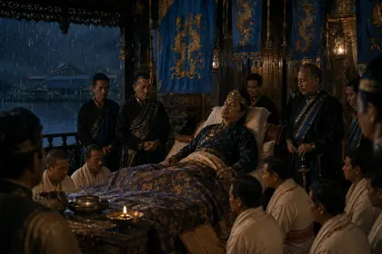
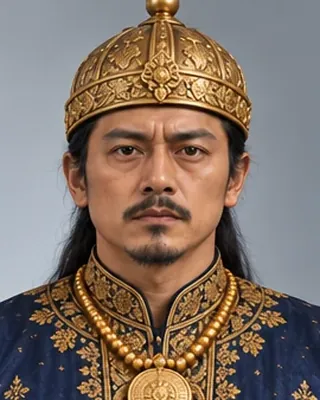
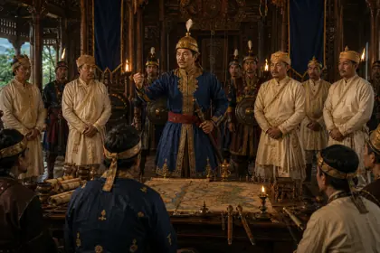
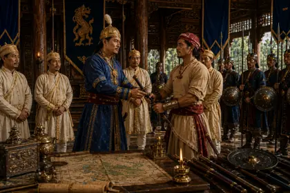
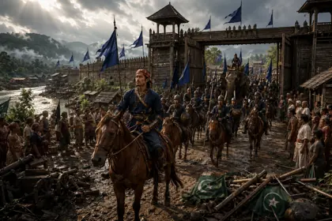
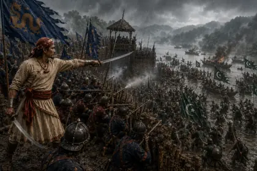
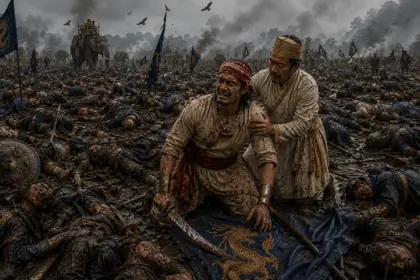
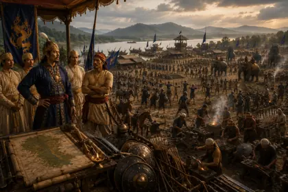

November 1663
চক্ৰধ্বজ সিংহ
1663–1670 · Twenty-first Ahom king

Refused Mughal tribute, rebuilt the army and recaptured Guwahati in 1667. Appointed Atan Burhagohain Rajmantri Dangaria and Lachit Borphukan commander.
Died April 1670.
Record confidence: high.

November 1663

1667

1667

November 1667

1667

August 1669

1669–1670